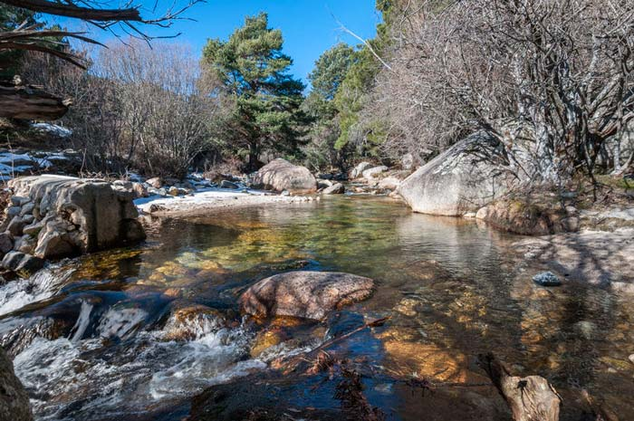

Galería de paseos
Explora la belleza de la naturaleza a través de nuestra colección de paseos al aire libre
Descubre paisajes impresionantes, flora y fauna diversa, y momentos inolvidables capturados durante nuestras excursiones. Cada imagen cuenta una historia de aventura y conexión con el entorno natural. ¡Inspírate para tu próxima escapada!
1. Parque Natural La Pedriza
El Parque Regional la Pedriza es una de las zonas más populares de la sierra de Guadarrama y uno de los parques naturales cerca de Madrid preferidos por los escaladores y senderistas. Vienen atraídos a este berrocal los fines de semana por sus paredes, riscos y canchales que conforman un paisaje único en la orografía madrileña.
Aunque existen muchas rutas de diferentes dificultades, es importante informarse antes de lanzarse al camino, especialmente en las estaciones del año más frías. En verano es un buen momento para refrescarse con el agua del río Manzanares, que recorre uno de los enclaves más típicos de la naturaleza cerca de Madrid.
Distancia: 15,6 km.
Duración: 5:42 horas.
2. Embalse de El Atazar
En la sierra Norte se encuentra este embalse a una hora de Madrid, también es conocido por su enorme tamaño como el mar de Madrid. Forma parte del Canal de Isabel II y está rodeado por la denominada Mancomunidad del Embalse de Altazar, en la que se encuentran pueblos tan distinguidos como el Berrueco.
Hay diversas rutas de senderismo dependiendo de la dificultad y duración que queramos, aunque hay algunos puntos históricos a tener en cuenta, como la Atalaya Árabe y el Puente romano. Sin duda, una parada obligatoria si buscas lugares naturales con encanto cerca de Madrid.
Distancia: 15,94 km.
Duración: 6 horas.
3. Lagunas de Peñalara

El Parque Natural de Peñalara es otro de los sitios para visitar en Madrid en la naturaleza: alberga el pico más alto de la Sierra de Guadarrama con 2.428 m, y una serie de lagunas de origen glaciar. Hay rutas senderistas para todos los niveles, pero para poder disfrutar de las lagunas no tendrás que pasar por tramos complicados.
De entre las pequeñas lagunas destacan dos: la Laguna Grande de Peñalara y la Laguna de los Pájaros. La primera, arriba en la foto, es la más visitada y la que tiene la ruta más accesible.
Y para completar un día perfecto, podemos ir a comer a Cercedilla o Rascafría, dos bonitos pueblos de la sierra madrileña donde se come muy bien.
Distancia: 14 km. de trayecto circular.
Duración: 7 horas.
4. Puerto de Canencia

A una hora y cuarto de la capital encontramos este tesoro de la naturaleza madrileña, un abedular con arroyo incluido. El Puerto de Canencia está repleto de cascadas y de rutas senderistas, pero la más conocida es la Chorrera de Mojonvalle.
La zona está también repleta de pinos y robles de hoja caduca que ayudan a crear ese paraje tan otoñal. Además de las rutas, es una buena oportunidad para visitar el municipio que da nombre al puerto y hacer algo de turismo local dentro de Madrid.
Distancia: 8 km.
Duración: 2,5-3 horas.
5. Las Cárcavas
La ruta para llegar a Las Cárcavas comienza en la presa de Pontón de la Oliva, justo en la frontera entre la Comunidad de Madrid y Guadalajara. Este paisaje protegido —parecido al que podemos encontrar en las Barrancas de Burujón — se forma por la erosión remontante del agua en las tierras con poca sujeción vegetal.
Para llegar hasta ellas hay dos caminos: uno corta, de unas dos horas, con una gran cuesta inicial, pero más directa a las Cárcavas, y otro más largo y circular, pensada para pasar el día.
Distancia: 12 km.
Duración: 3:30 horas.
6. El bosque finlandés
En Rascafría, uno de los pueblos más fríos de Madrid, hay un paraje de abedules, chopos y abetos que se ha apodado como el bosque finlandés.
Tiene un pequeño estanque que ayuda a crear este paisaje de apariencia escandinava, con embarcadero y cabaña de madera incluida, que está justo en frente del Real Monasterio de Santa María de El Paular. El paseo siguiendo el río Lozoya es sencillo y tiene un encanto especial en cada época del año gracias a los árboles de hoja caduca que lo rodean.
Distancia: 5 km.
Duración: 3 horas.